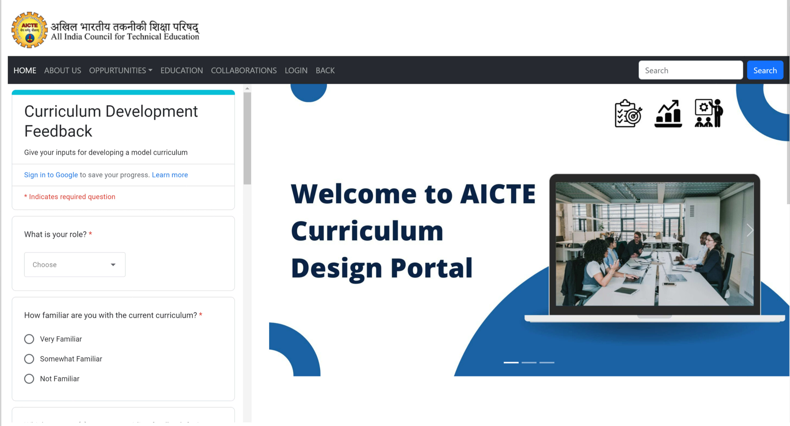
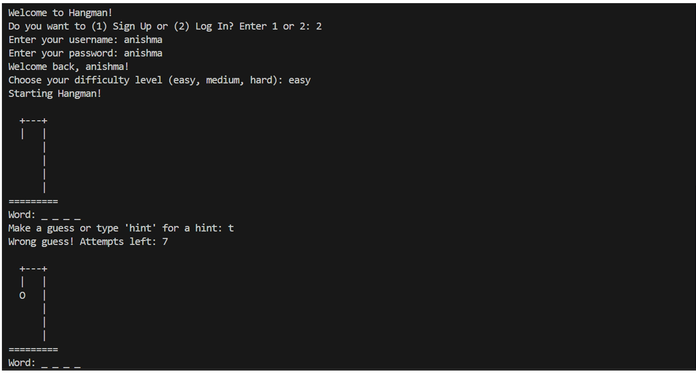
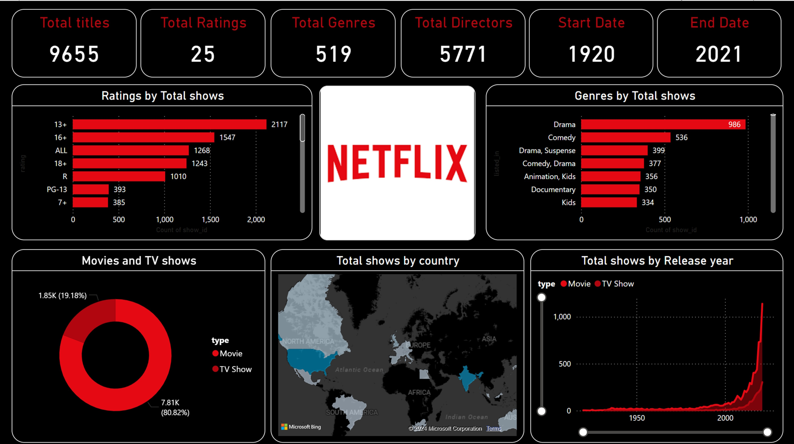

Dharnish BM
Student
Student
Curriculum Design Portal is a web application that helps the faculty to design the curriculum for the students. The faculty can add the subjects, the credits, and the faculty for the subjects. The faculty can also view the curriculum designed by them. The students can view the curriculum designed by the faculty. The admin can view the curriculum designed by the faculty and can also view the feedback given by the students.
Hangman Game is a game where the user has to guess the word by guessing the letters. The user has to guess the word within 6 chances. If the user guesses the word within 6 chances, the user wins the game. If the user is not able to guess the word within 6 chances, the user loses the game.
Student Management System is a web application that helps the admin to manage the students. The admin can add the students, view the students, update the students, and delete the students. The admin can also view the feedback given by the students.
Netflix Dashboard is a Data Visualisation Projects done by using Microsoft Power BI.
